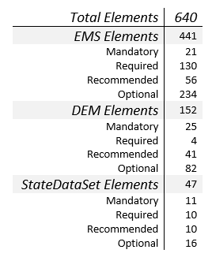
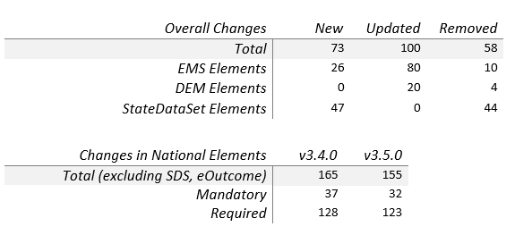

The NEMSIS data dictionary was developed through a collaborative effort with the EMS industry including: web-based reviews, public comment periods, focus groups, industry dialogue, topic focused projects, and consensus.
The National EMS Information System Version 3 represents a major revision from Version 2 released in 2005.
Adopting a broad perspective, the initiative to move to a 3rd version of the NEMSIS data dictionary was fueled by the need to improve data quality,
enhance our ability to assess EMS performance, augment the flexibility of the standard for state adoption and, to move the NEMSIS standard into the Health Level 7 (HL7)
organization for approval as an American National Standards Institute (ANSI) standard.
The charts below outline the composition of the NEMSIS data standard into three data sets, EMS (ePCR), Demographic (Agency), and StateDataSet (SDS). They also show how the standard has changed from the previous version (v3.4.0) to the current version (v3.5.0).
Composition of the NEMSIS Version 3.5.0 Standard

Changes from v3.4.0 to v3.5.0
